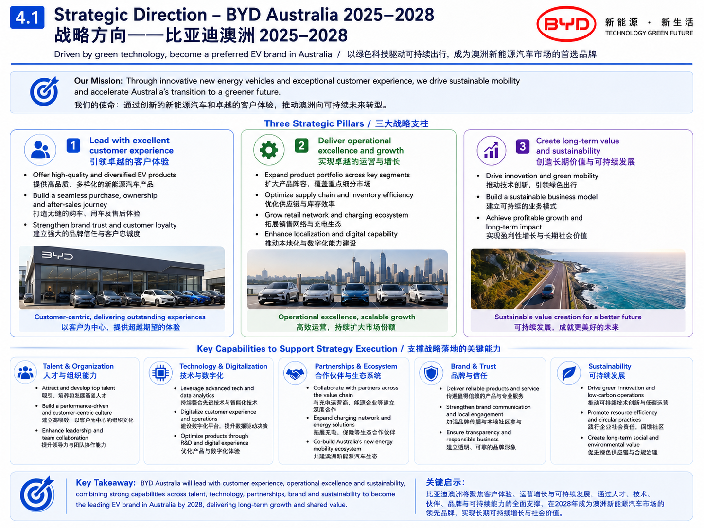
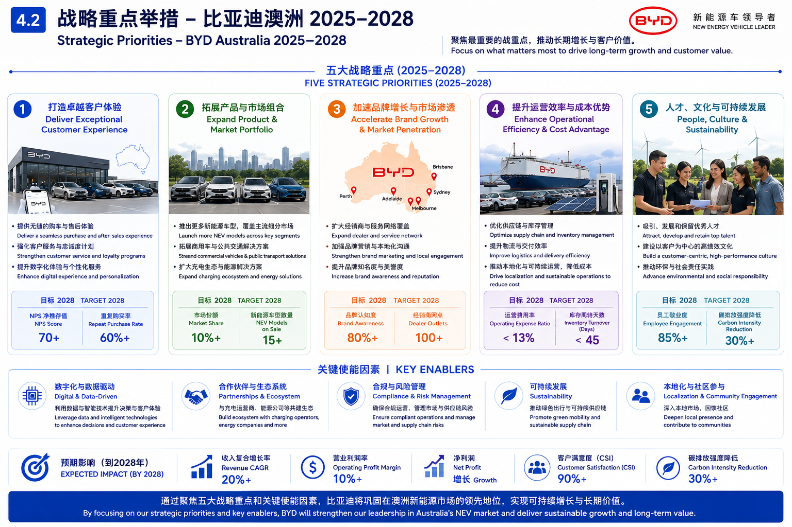
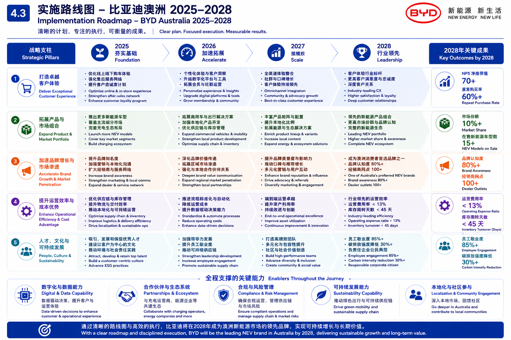
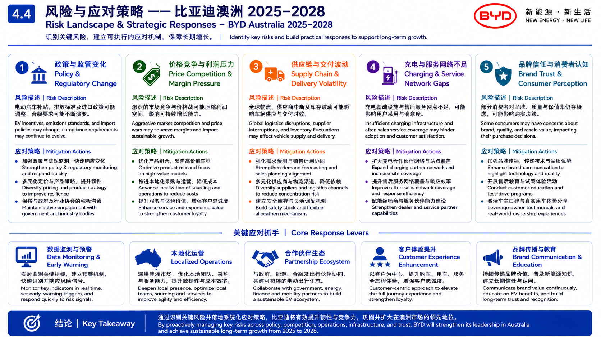

Project Overview
项目概述
-
Analysed BYD Australia’s market opportunity in the growing EV sector, focusing on mainstream household car buyers.
分析比亚迪在澳大利亚电动车市场中的增长机会，重点关注主流家庭购车人群。 -
Developed a communication strategy to reduce perceived risks around EV cost, charging access, range anxiety and family practicality.
制定传播策略，降低消费者对电动车价格、充电便利性、续航焦虑和家庭实用性的感知风险。
Key Focus
分析重点
- Target audience and consumer barriers｜目标受众与消费者障碍
- Brand trust and market penetration｜品牌信任与市场渗透
- EV adoption message framing｜电动车采用传播信息框架
- Strategic priorities, roadmap and risk responses｜战略重点、实施路线与风险应对
Methods
分析方法
- Target audience analysis｜目标受众分析
- Consumer barrier mapping｜消费者障碍识别
- Brand message framing｜品牌信息框架设计
- Campaign communication strategy｜活动传播策略设计
- Risk landscape and response planning｜风险识别与应对规划
Preview Materials
预览材料

Strategic Direction｜战略方向

Strategic Priorities｜战略重点举措

Implementation Roadmap｜实施路线图

Risk Landscape & Strategic Responses｜风险与应对策略